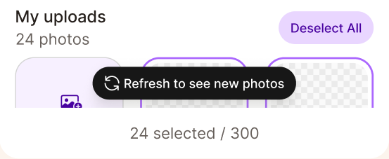

Aperture Design System · ADS-115 · Octobre 2026
Repenser la hiérarchie des boutons
Où on va, et comment on en est arrivé là.
01 Août · Pistes envisagées
Les pistes explorées par l'équipe.
- Chaque designer a exploré ses propres propositions sur de vrais écrans de l'app.
- Revues ensemble en DS Office Hours les 14 et 21 août.

03 Septembre · Premier mapping : le noir en secondaire
Button LabelPrimaire
Button LabelSecondaire · noir
Button LabelTertiaire · violet clair
Save your changes?
You edited 3 pages of your book.
Discard changes Save
05 Deuxième mapping : le noir en tertiaire
Button LabelPrimaire
Button LabelSecondaire · violet clair
Button LabelTertiaire · noir


07 Benchmark · 16 design systems
Partout, le poids baisse à chaque niveau.
16/16primaires pleins
12/16secondaires à contour
13/16tertiaires en texte seul
Etsy, Nike, Vercel, Shopify, eBay, Decathlon, Airbnb, Uber, Pinterest, Stripe, Alibaba, Skyscanner, IKEA, Duolingo, Rakuten, Mailchimp. Faites défiler l'image pour voir tous les systèmes.

12 Sur de vrais écrans · avant et après
Les mêmes écrans, avec la nouvelle hiérarchie.


12 Sur de vrais écrans · avant et après
Les mêmes écrans, avec la nouvelle hiérarchie.